¿QUÉ ES WATER PACIFIC?
WATER PACIFIC implementa una tecnología ecoeficiente utilizando un colector de agua atmosférico que tiene la capacidad de suministrar agua potable en comunidades remotas. Implementamos tecnologías limpias que contribuyen a nuestro planeta de forma progresiva y mejoran la calidad de vida de sus habitantes.
SOBRE EL PROYECTO
El objetivo de este proyecto es implementar un modelo factible y productivo para el suministro de agua potable a comunidades aisladas en áreas remotas que no cuentan con suministro de agua cerca.
DESARROLLO
Es una tecnología acondicionada para zonas aisladas y en la que la humedad del aire se condensa para producir agua potable del aire. El agua obtenida es pura y apta para el consumo humano y otros fines. Además, el sistema se puede implementar en cualquier zona, ya sea desierta o rural, donde el líquido fundamental para la vida es difícil de obtener..
PORTAFOLIO
Utiliza un mecanismo de enfriamiento limpio para producir bajas temperaturas, sin utilizar gases refrigerantes contaminantes para su funcionamiento. El precioso líquido obtenido puede almacenarse, distribuirse por una red o entregarse con un simple toque.
Habilidades Uno

Directamente, el proyecto tiene como objetivo ayudar a disminuir la tasa de mortalidad al dar acceso a las personas al agua potable, especialmente a los niños que son más vulnerables a la enfermedad.
Habilidades Dos
Además, el proyecto se esfuerza por reducir moderadamente la carga de trabajo de mujeres y niños, quienes a veces tienen que viajar grandes distancias para recolectar una pequeña cantidad de agua.
Habilidades Tres
También tiene como objetivo reducir la tasa de desempleo en ciertas áreas y mejorar los hábitos de consumo de agua.